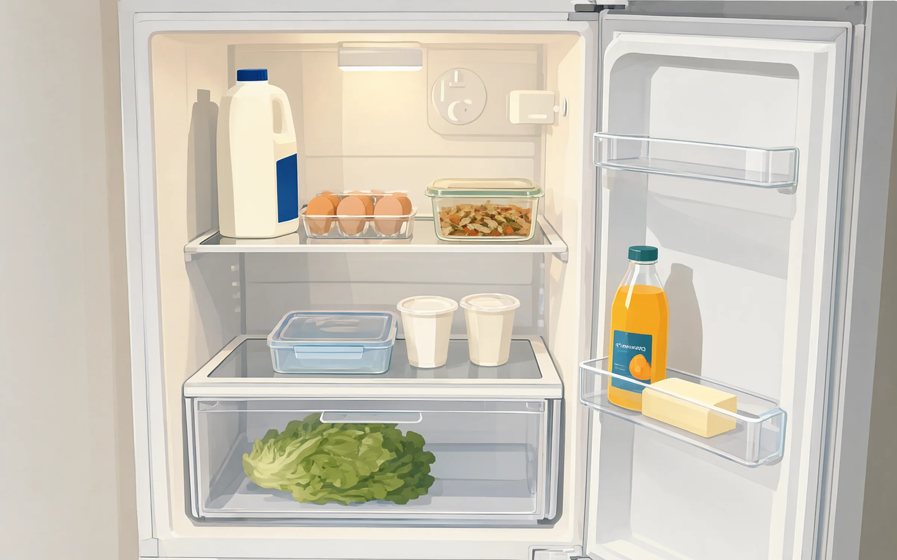
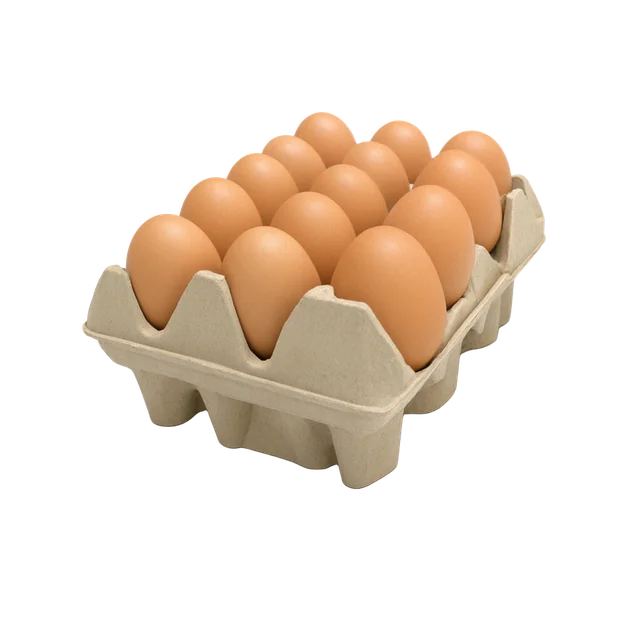
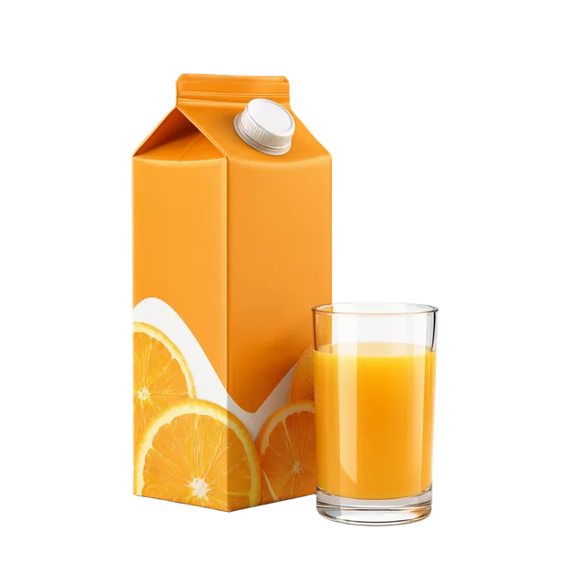
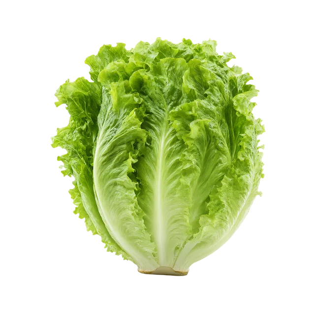

厨房
家居
服装
食物
身体部位
美妆与护肤
出行
Fridge
冰箱
场景
卡片
扁平
女声
男声

指到或点一下物品
再听一次
milk
eggs
food container
storage box
yogurt
orange juice
butter
lettuce
milk
牛奶

eggs
鸡蛋
food container
保鲜盒
storage box
收纳盒
yogurt
酸奶

orange juice
橙汁
butter
黄油

lettuce
生菜
‹ Appliances 小家电
厨房
Storage 储物 ›